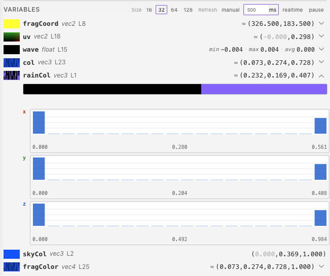
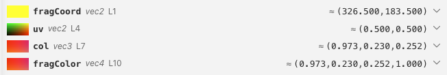
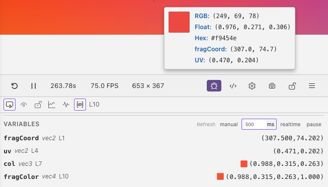
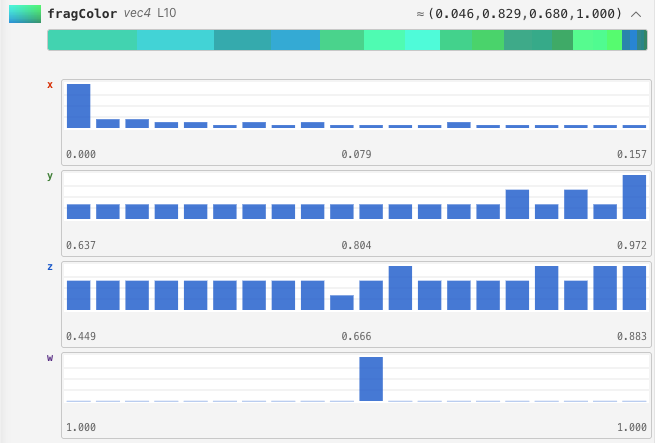

Variable Inspector¶
The variable inspector captures the values of all in-scope variables at the current debug line and displays them in the debug panel. It supports two capture modes: sampling (across the canvas) and pixel mode (a single pixel under the cursor).
Enabling¶
Toggle the variable inspector with the button in the debug panel header. When enabled, a Variables section appears in the debug panel showing every captured variable. The enabled state persists across sessions.

Captured Variables¶
The inspector automatically finds all variables in scope at the current debug line. This includes:
- Variables declared before the debug line in the current function
- Function parameters
- Variables from enclosing scopes (e.g. outer blocks)
For Slang and WGSL, the inspector shows function parameters and local variables. Use the Uniforms section for built-ins and the config panel's Script tab for script values.
Supported Types¶
| Value | Display |
|---|---|
Scalar (float, int, bool) |
A single value; booleans appear as 0 or 1 |
Vector (vec2, vec3, vec4) |
Each component's value |
2×2 matrix (mat2) |
Four values in column order |
Slang and WGSL support their equivalent scalar, vector, and 2×2 matrix types.
See Language Support for details.
For larger matrices, arrays, or structs, select a supported component or field.
Samplers and out/inout parameters are not shown. Up to 15 variables can
be captured on a line.
Whole-Shader Mode¶
When no specific debug line is selected, the inspector captures variables at the last line of mainImage, giving you a snapshot of the final state of all local variables.
Capture Modes¶
Sampling¶
Samples the variable across a grid of points spanning the full canvas. Each grid cell samples the shader at the corresponding screen position.

Grid sizes:
| Size | Total Samples | Speed | Detail |
|---|---|---|---|
| 16x16 | 256 | Fast | Low spatial resolution |
| 32x32 | 1,024 | Balanced | Default, good for most cases |
| 64x64 | 4,096 | Slower | High spatial detail |
| 128x128 | 16,384 | Slowest | Maximum detail |
The size buttons appear in the Variables section header. The active size is highlighted.
The sampling grid cannot exceed the current preview resolution. For example, a
1 × 1 preview provides just one sample.
Pixel Mode¶
Captures variable values at a single pixel under the cursor. The pixel inspector needs to be enabled so you can click to lock a specific pixel position.

Refresh Modes¶
Control how often captures are updated. The refresh mode buttons appear in the Variables section header.
| Mode | Behavior | Use Case |
|---|---|---|
| Manual | Recapture only when state changes (cursor move, shader edit) | Stable analysis, lowest performance impact |
| Polling | Recapture every N milliseconds | Monitoring animated values at controlled cost |
| Realtime | Recapture every frame (~60Hz) | Watching live animations, highest performance impact |
| Pause | Freeze captured values, no new captures | Inspecting a snapshot without changes |
Polling Interval¶
When in polling mode, a number input appears to set the interval in milliseconds. Default is 500ms.
Expanded Details¶
Click the expand button on a varying variable (sampling mode) to see detailed statistics and visualizations.

Scalar Variables (float, int, bool)¶
Expanded view shows a greyscale frequency bar and a histogram of the sampled values. Taller bars mean more samples in that range. Hover over a bar for its range, count, and percentage. A dashed marker highlights zero when the values include both negative and positive numbers.
Vector Variables (vec2, vec3, vec4)¶
The color frequency bar shows the most common colors. Hover over a segment for its color values and percentage. Per-channel histograms show how each component varies, using matching scales so you can compare them.
WGSL Capture Types¶
Scalar and vector locals, parameters, and return values can be captured, including
values read from arrays, struct fields, and configured storage. Types are inferred
for many unannotated let and var declarations, including expressions using
iTime, sin, select, pointer dereferences, bitcast, integer bit operations,
transpose, vector comparisons, and scalar-matrix multiplication.
If a local initialized from an unsupported expression is missing from capture, add
an explicit type.
Whole arrays, whole structs, and arbitrary pointer values cannot be displayed as
capture rows; select an element or field instead.
Both mat2x2f and mat2x2<f32> can be captured, including inferred locals,
return values, and storage elements. The four values appear in column-major order:
let basis = mat2x2f(0.125, 0.25, 0.5, 0.75);
// Capture: 0.125, 0.25, 0.5, 0.75
// column 0 column 1
Larger matrices and f16 matrices are not capturable as a whole. Select a supported
column or scalar component instead. Boolean vectors are also inferred for vector
comparisons but are not capturable as a whole; select a scalar component. Matrix capture in the Variable Inspector is
separate from the Storage inspector, which reads scalar and vector buffer elements and numeric struct fields without editing them.
Tips¶
- Use manual refresh mode when you don't need continuous updates
- Start with 32x32 grid and increase only if you need more spatial detail
- Expand a variable to see its value distribution
- Use pixel mode when you only care about values at a specific point
- Use pause to freeze captures while you analyze results
- If captures look unexpectedly coarse or oversized, check the live resolution shown in the toolbar, because the inspector follows that effective render size exactly